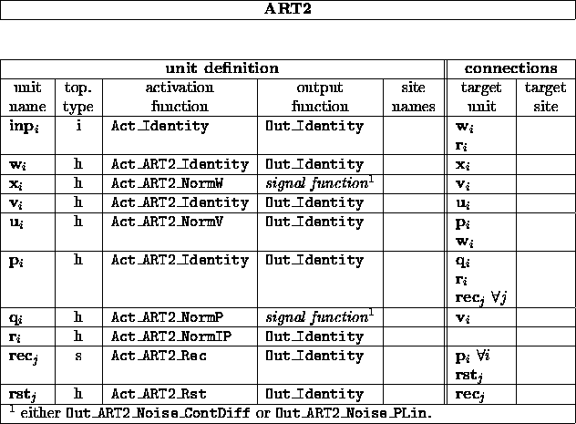
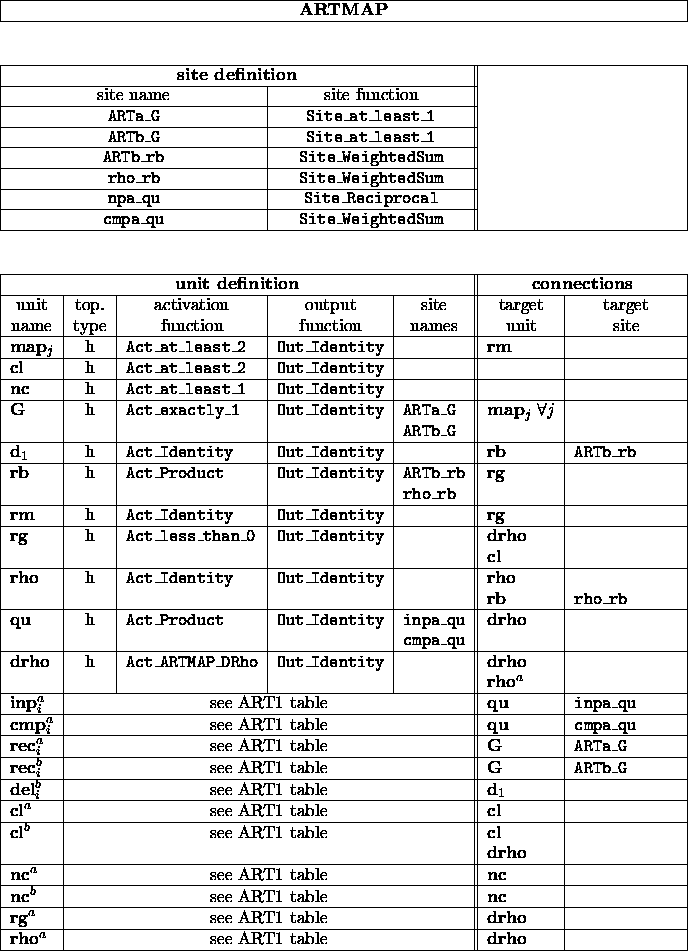

The following tables are an exact description of the topology requirements for the ART models ART1, ART2 and ARTMAP. For ARTMAP the topologies of the two ART1-parts of the net are the same as the one shown in the ART1 table.

